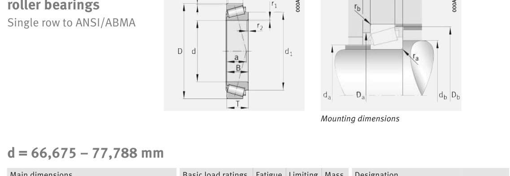

Original catalogue drawing - FAG Schaeffler HR 1, page 624

Scanned from the manufacturer catalogue page listing this part number. All part numbers printed on that table share the same drawing.
Scale cross-section
Blue = inner / outer ring, yellow = rolling element. Drawn to scale from this part's own
dimensions for selection reference only - not a manufacturing or assembly drawing.
Dimension table (mm / inch)
Symbol
Dimension
mm
inch
d
Bore diameter
77.788
3.0625
D
Outside diameter
117.475
4.625
B
Inner-ring / bearing width
25.4
1
T
Overall assembly width
25.4
1
C
Cup / outer-ring width
19.05
0.75
Notes
Weights are given in kg. Load ratings are shown in both the original catalogue units and the converted value (1 N = 0.2248 lbf). Data is provided for selection reference only - confirm against the latest official catalogue before ordering.
Main dimensions
Bore d (mm)
77.788
Outside dia. D (mm)
117.475
Width B (mm)
25.4
Overall width T (mm)
25.4
Cup width C (mm)
19.05
Inner-ring OD d1 (mm)
99.2
Load ratings & speeds
Basic dynamic load rating Cr (lbs)
22256
Basic static load rating Cor (lbs)
35745
Basic dynamic load rating Cr (N)
99000
Basic static load rating C0r (N)
159000
Basic dynamic axial rating Ca (N)
3
Fatigue limit load Cur (N)
20200
Factor e
0.51
Factor Y
1.18
Factor Y0
0.65
Limiting speed nG (rpm)
5,800
Effective load centre a (mm)
28
Weight
Weight (kg)
0.932
Mounting dimensions (fillets / shoulders)
Chamfer r2 min (mm)
3.6
Shaft shoulder da (mm)
85
Shaft shoulder db (mm)
91
Housing shoulder Da (mm)
105
Housing shoulder Db (mm)
113
Housing fillet ra max (mm)
3.6
Fillet rb max (mm)
3.3
Bearing life (ISO 281 basic rating life)
C / P
Equivalent load P (N)
L10 (106 rev)
L10h at 1,900 rpm
4
24,750
102
891
6
16,500
392
3,443
8
12,375
1,024
8,982
10
9,900
2,154
18,899
15
6,600
8,323
73,013
Basic rating life per ISO 281: L10 = (C/P)10/3 with C = 99,000 N. Hours = L10 x 106 / (60n). Life-modification factors for lubrication, contamination and temperature (aISO) are not included.
Source & traceability
Brand
FAG
Source catalogue
FAG / Schaeffler Rolling Bearings HR 1
Catalogue page
p.624 (dimensions)
Load ratings in newtons, fatigue limit load Cur, limiting speed nG and reference speed nB.
Send us the quantity you need and we will come back with price and
lead time, normally within 24 hours. Equivalent parts from other brands can be quoted at the same time.